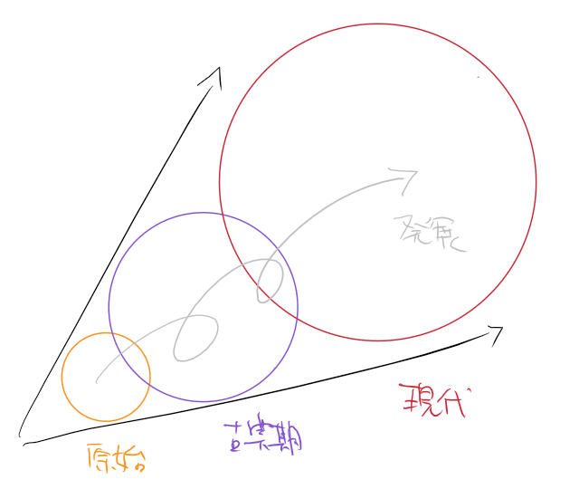
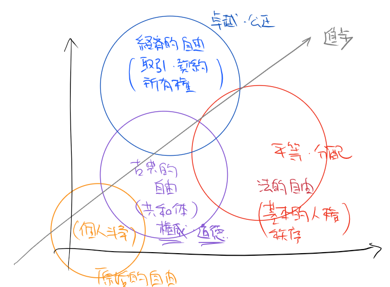
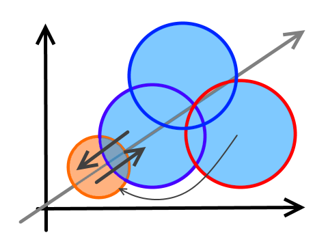
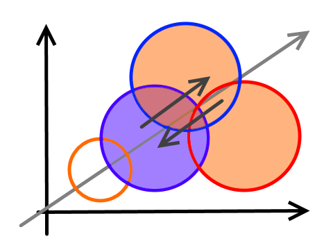
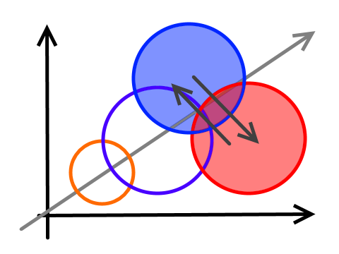

四つの自由
公開日：
自由（じゆう）
liberty; freedom; Freiheit; liberté一般的には，心のままであること，あるいは外的束縛や強制がないことを意味する。哲学上は，人間が行為する際に一つの対象を必然的に追求するのではなく，それ以外の対象をも選びうる能力をいう。
一口に自由と言ってもさまざまで、明確に定義するのはなかなか難しいけれど、ここでは単に「可能性」と言い換えられるものと捉えておく。つまり、自由とは可能性の多さであり、選択肢の多さだ（実際にそれを選びうる状態・状況にあるか、能力を発揮できるかは、とりあえず置いておく）。

さて、自由は歴史上、一般的に、ときどき退行しながらも、それを乗り越えて発展・拡大してきた。たとえば、現代の私たちは、北京原人より自由だ（たぶん）。北京ダックを食べる自由、博物館で北京原人の骨を鑑賞する自由……いろいろ。
しかし、その一方で、不自由も多く抱えている。たとえば、北京原人は当たり前のように享受していたのに、現代人にはできない自由がある。気に入った場所で寝転んで一夜を明かす自由（通報される）、艶々とした毛皮を持つ獣を狩る自由（免許と狩猟が可能な期間が定められている）、そのたもろもろ。
つまり、ある自由は他の自由を基礎・基盤としている（1）。自由が歴史上、なんども退行を強いられてきたのは、基盤となる自由を損ない、その上の自由を失ったからだ。死んで日照権を欲するのは不可能だし、内乱時に事業を起こし継続するのは難しい（“死の商人”みたいなのは別にして）。
また、ある自由は他の自由を制限する場合がある（2）。そのため、全体としての自由は拡充されたのに、あるヒトによっては自由が制限されたと感じることもある（パレート改善ではない。政治的な紛争につながる）。さらには、発生学におけるオーガナイザーのように、ある発達段階においては必要があり生まれた自由が、次の段階では不要となり、退化を強いられる自由もある（たぶん*1）。つまり、自由の分析は観念的であるよりも、歴史的（3）に行われるべきだ。
そんなわけで、自由は、その階層性（1）と対立（2）、そして歴史性（3）を考慮しながら、もう少し分割して考えた方がよいように思われる。

今回は独断と偏見で4つに分けた。
四つの自由（The Sign of Four みたいなノリで）
1. 原始的自由
個人が（非（市民）社会的な）自然空間で行使する自由である。自分は“サルの自由”という愛称で呼んでいる（おサルさん、ごめんね）。
原始的自由しかない世界（← 表現がだいぶおかしいが）では、ヒトは地形や気候、植生など環境の制限内でなんでも行うことができる。
まばらに分布するなら（ルソー的自然状態？）平和だが、人口密度があがると互いの互いに対する闘争に陥るだろう（ホッブズ的自然状態）。
仮に取引が行われても、一度の裏切りが裏切りの連鎖を生むため、長く安定して継続されることはない。そのため、高次な社会的自由はかなり制限されている。
2. 古典的自由（共和的自由）
この自由においては、相互贈与による恩恵（自由）が得られる。債務が履行されない場合であっても、原始的自由で認められていた暴力による問題の解決は認められない。原初的な司法機関で解決が図られる（法治主義）。
秩序を維持するために、権威や倫理、道徳が重んじられる。これを身に着けていないものは、直接的または間接的に社会的制裁を受けるため、自由を制限される。
（都市）共同体や（市民）社会の成立により、法的な自由と、経済的な自由の観念が芽生えるが、古典的な価値観によってそれは制限される。法律や自由な行き来、金銭的取引よりも、情念や恩義、権威、血縁、地縁などが優先される。
3. 法的自由
この自由では、共同体内でしか通用しないドメスティックなルール（小さな社会の）から、共同体間または共同体に関わらず（大きな社会で）通用する普遍的なルールが指向される。鄭の子産が危惧したようにリクツがリクツを生み、論理的正当性をもって社会を変革しようとする。
恩義、権威、血縁、地縁などの古典的徳目を否定して、権利のベースライン向上（基本的人権）と平等（と分配）を目指す。
支持を得たいエリートと、それによって利益を受ける貧民に支持されてきた。たいていは（財政および機能的に）大きな政府を志向する。
4. 経済的自由
贈与を“貨幣”というトークンで計り、匿名化する。それにより、相対や狭い縁の中で行われてきた取引を共同体内または共同体間に開放することで、自由を拡張する。
所有と契約、共同体内・間の移動を除くルールには概ね否定的（私的権力の拡大に使える場合はこの限りではない）で、多くは（機能的に）小さな政府を志向する。
自由同士の緊張関係
原始的自由 vs 社会的自由（原始的以外の3つの自由）

日本における最初の近代法は“仇討ちの禁止”だったらしいが、これは 原始的自由 vs 社会的自由 の関係においてたいへん象徴的なことだと思う。要するに、そんな感じで、個人の自由をある程度奪って、その代わり社会単位で自由を拡大しようぜ、そうしたら個人の自由も拡大されるよ、というのが自由の“進歩”の概略だった。
ただし、法的な自由の立場からは、原始的自由を奪いすぎではないかという視点も提示されている。
たとえば、（おカネを持っているのに、自由と称して）ホームレスになるのは軽犯罪法違反*2だが、これを認めようというリベラルもなかにはいる。社会的自由において、ヒトは市民であることを強いられる。市民は働いて納税し、政治参加（投票）をして、お金があれば家に住むべきである（なければ、行政に頼って仮の家を得るべきであるし、行政は完全でないにしてもそれを用意している）。よりよい政治のために知見も磨くべきである。
権利のベースライン向上するにつれて、社会的自由も拡充するが、それはそれで窮屈なことでもある。
小さな社会の自由（古典的な自由） vs 大きな社会の自由（経済的＋法的自由）

小さな社会（共和体）の自由なくして、大きな社会の自由はあり得ない。少なくとも、田舎のモノは都市に対して、中小企業の社長さんは大企業に対して、権利や自由を勝ち取るために立ち上がった最初の人たちはそれを受け継いだだけの人たちに対して、そう思っている。震災を見よ、経済インフラが破壊され、行政が機能しなくなったとき、社会の自由を維持したものは何か。それは人々の紐帯、絆、恩義、家族、地縁である。
――というのは（おもに原理的保守主義者の）一つの理屈だが、そのために小さな社会の自由にとどまろうという人は少なく、法的・経済的な自由が発展するにしたがって、古典的な・共同体の・ドメスティックな自由は抑圧されがちである。
まずは法的な自由との関係。
かつては「法は家庭に入らず」といった感じだったが、今では児童虐待が疑われるなら通報すべきとされている。喫煙家の肩身は年々狭くなるし、現在の世界的趨勢の中では、2次元美少女エロ画像の単純所持も早晩認められなくなるだろう。一つ一つはリクツで武装されており、それはそれで“当たり前”だともいえるが（異議の残るものもあるけど！）、“当たり前（普遍）”のベースラインが上がると、“時代遅れな”価値観の居場所は少なくなっていく*3。
経済的な自由との関係も、これまたドライだ。
経済的に成り立たない文化は、いかに権威があろうとも新しいものにとってかわられる（大抵、行政が延命させる）。文化を買って、単なる経済的な興行にしてしまうこともままある。市場で評価されないものに価値はなく、情緒的・恩義的・権威的なものの多くは、よりドライなものに置きかえられたり、捨て去られたりしてしまう。
これら2つの自由――大きな社会の自由――が複合して、小さな社会の自由を制限することもある。
たとえば、小さな街にとって伝統のあるお祭りは町おこし（経済的復興）の数少ない切り札だ。そのため、宣伝して街の外から人を呼ぼうとする。すると次第に祭りは身内の楽しみから、外に向けての経済活動に変質していく。死人上等の危険な祭事は法的に制限され、いざ事故が起ころうものなら裁判沙汰になる。そうした祭りに愛着や権威を感じる住人は次第に減っていき、ますます形骸化していく。
とはいえ、経済と文化の関係でいえば、経済がサブカルチャーのような“小さな社会”を出自としない文化を生み、文化が消費を盛り上げる部分もあるので、まったくの敵対関係ということではない。緊張関係もあれば、共生関係もある。その点では、自由の生態系は自然に似ているようにも感じられる。
法的自由と経済的自由

個人的な意見だが、文字と交易（経済）、法律はほぼ同時に生まれた。
ここからは妄想だが、文字は当初、自分だけのものだった。最初の文字は、相手へ与え、いずれ返してもらうはずの恩義を私的にメモするために使われたであろう。そして、恩義の返済が果たされないとき、彼は顔を真っ赤にして石板だかパピルスだかを持ち出して主張したに違いない。「ほら、ここに“鶏、3羽”と書いてある、ちゃんとメモしておいたんだ！」きっと相手はその場をのらりくらりと切り抜けてしまうのだろうが、次からの契約のときには、おそらく2つのメモ――つまり、契約書を交わそうと感じるに違いない。そうした過程で、まず数字が共通化され、鶏の表し方も合わせるようになり、契約書へ“神に誓って”“次の満月の日までに”“ウルクのギルガメシュから、エンキドゥへ”などと書き添える必要から文字が少しずつ整備されるようになったのではないだろうか。
話はだいぶそれてしまったが、要するに、法的自由と経済的自由は文字を介して兄弟のようなものなのではないだろうか。
しかし、残念ながらそれほど仲のよい兄弟ではないらしい。
歴史的に、法は経済を統制するために使われ、経済の肥大化によって破られてきた。法的自由にとって経済は所有と契約ですべてを運んでしまおうとする無秩序だったし（高利貸し、公害問題、資本の搾取などを見よ！）、経済的自由にとって法は“小さな社会”が既得権益を守るために持ち出す暴力装置だとしばしば見なされてきた（し、そのように利用されてきたことも少なくない）。経済学部生は努力に対する取得単位の弾力性を計算しながら楽して卒業したいなー、法学部みたいにガリ勉するなら下痢便した方がマシだなーと思っているし、法学部生は経済を法に従属するものと扱い、その学部生は文明と社会のルールに疎いサルだと思っている。なのに、大抵いっしょくたにされる（法経だぞ、ホーケイ）のはとても不幸なことだと思う。
雑な結び
一口に自由といっても、さまざまな自由があり、それらは歴史的発展の中で階層関係・緊張関係を成しながら発展してきた。
話は変わるが、自由には「～への自由」と「～からの自由」という分類もある。
しかし、人にはそれぞれ立場があり、求める自由も、守る自由も異なる。つまり、個人によって「～への」「～からの」というベクトルは異なるわけで、自分にはあまりいい分類には見えない。
むしろ、自分は今どの立場にいて、自由に対してどのようなベクトルを持っているかを自覚してみるとよいと思う（歳を食うにしたがってポジションやベクトルが変わることだってままある）。
- おカネを稼げないわけでもないのにホームレスを好む人は、原始的自由に愛着を持っている（というか、社会的自由の基礎たる（まっとうな）市民（になれ）主義に馴染めないのに、もはや世界はほぼすべて市民社会に組み込まれているから、逃れるすべもない）
- 保守主義者は、古典的自由を行き過ぎた経済とリベラリズム（法）から守ろうとしている。ホームレスは苦々しい存在だ
- 共和主義者は保守主義者と同じ場所に立つが、権威主義を否定し、経済と法の自由拡大というベクトルを認めている（好きな立場なので評価が甘い）。
- リベラリストは、保守主義・共和主義の価値観を時代遅れだと思っている。ネオリベラリズムは秩序を忘れた経済的サルの群れだ。
- リバタリアンは、経済的自由以外要らなくね？ と感じている（おれも昔はそう思っていた、経済学部あるあるだな）。が、アカデミズムでは保守主義者よろしく、権威とうまくお付き合いしているようだ。
自分自身にもポジションとベクトルがあるから公平なものの見方ではないが、まぁ、だいたいこんな感じだろう（共和主義者は、この拡大をやめない“自由空間”で、できるだけ真ん中のポジションをとろうとしてるんやね。どこが真ん中であるか、という問題で揉めたりするんやけど）。
ちなみに、技術的自由については今回オミットした。社会的な自由とそれを統一的に論じるのは難しいので。けれど、技術と社会は密接にかかわりあいながら進歩してきた。そういう視点の歴史書は最近（？）割と人気だと思うので、興味のあるヒトはいろいろ読んでみるといいと思う。自分もいろいろ教えてほしい。
以前の視点を、今の考えで書き直してみた。死ぬまでにはもう少しいい感じに表現できるようにしたい。